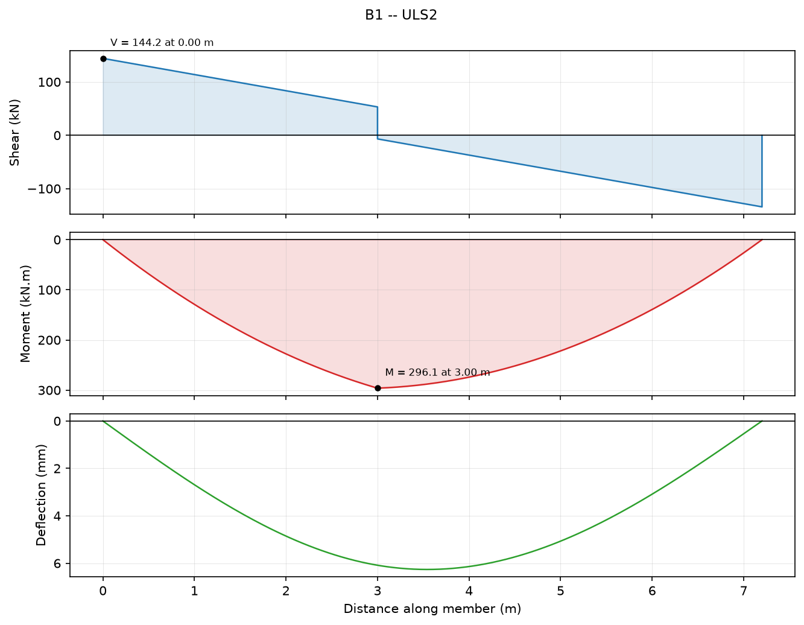
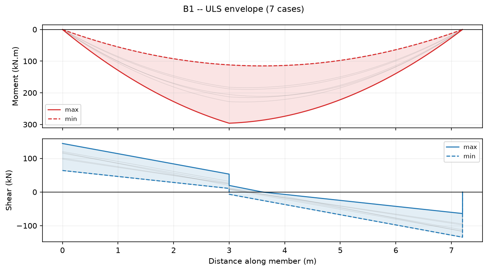
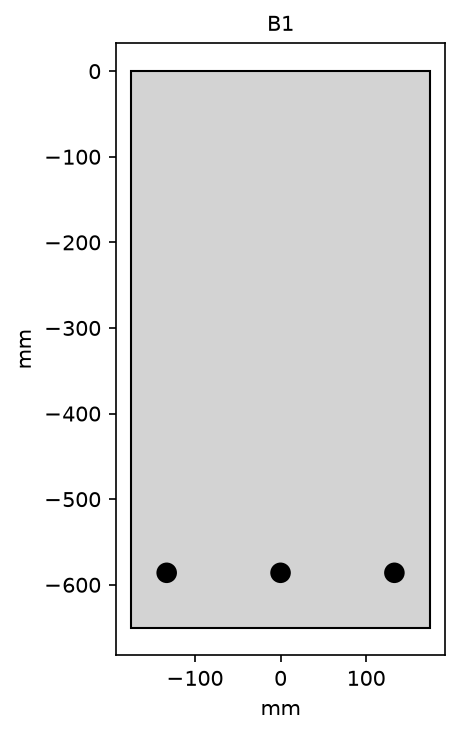

Job: 25-0142Project: Northbank DepotElement: Roof beam B1Revision: A
Result: PASS
NOT VERIFIED FOR ISSUE — one or more modules used in this report have not been checked against the printed standard. Development use only.
Simply supported roof beam, 7.2 m clear span, 350 x 650 | C32 | COV 40 | BOT 3-N24 | LIG N12-2L@250. Demands enveloped over 7 ultimate combinations to AS/NZS 1170.0; capacities to AS 3600:2018.
Scope
scope
Flexural and shear strength of B1 at the ultimate limit state only. Deflection, crack control, anchorage and the supporting blockwork are outside this calculation.
Assumptions
assumption
Permanent action 5.22 kPa over a 3.6 m tributary width, plus beam self weight at 24 kN/m3. Imposed action 0.25 kPa (AS/NZS 1170.1 Table 3.2, non-trafficable roof) with a 40 kN plant load at 3.0 m. Ultimate wind uplift 3.98 kN/m from V_des = 41.0 m/s to AS/NZS 1170.2.
1. Enveloped demands -- B1 (ULS)
Inputs
Symbol
Description
Value
Unit
n
Combinations analysed
7
-
Basis
First principles — Linear elastic analysis, results enveloped over load combinations
AS/NZS 1170.0:2002 Cl 4.2.2 — Combinations for ultimate limit states
AS/NZS 1170.0:2002 Cl 4.2.2 — Combinations for ultimate limit states
AS/NZS 1170.0:2002 Cl 4.2.2 — Combinations for ultimate limit states
AS/NZS 1170.0:2002 Cl 4.2.2 — Combinations for ultimate limit states
AS/NZS 1170.0:2002 Cl 4.2.2 — Combinations for ultimate limit states
AS/NZS 1170.0:2002 Cl 4.2.2 — Combinations for ultimate limit states
AS/NZS 1170.0:2002 Cl 4.2.2 — Combinations for ultimate limit states
Results
Symbol
Description
Value
Unit
M*_sag
Governing sagging moment [ULS2]
296.1
kN.m
M*_hog
Governing hogging moment [ULS1]
0
kN.m
V*
Governing shear [ULS2]
144.2
kN
delta
Maximum deflection [ULS2]
6.263
mm
R_A
Maximum reaction [ULS2]
144.2
kN
R_B
Maximum reaction [ULS2]
134.2
kN
austruct.analysis.envelope v0.1.0 · UNVERIFIED · not checked · run 2026-09-03T18:54:44+00:00

Shear, moment and deflection under the governing combination (ULS2)

Moment and shear envelopes over all ULS combinations
2. Flexural strength check -- AS 3600:2018 Cl 8.1
Inputs
Symbol
Description
Value
Unit
f'c
Concrete strength
32
MPa
D
Overall depth
650
mm
b
Compression face width
350
mm
A_s1
3-N24 at d = 586 mm
1357
mm^2
M*
Design bending moment
296.1
kN.m
Basis
AS 3600:2018 Cl 8.1.2 — Ultimate strength in bending
AS 3600:2018 Cl 8.1.3 — Rectangular stress block
AS 3600:2018 Table 2.2.2 — Capacity reduction factors
AS 3600:2018 Cl 8.1.5 — Ductility limit on k_uo
AS 3600:2018 Cl 8.1.6.1 — Minimum strength requirement
Validity envelope
Quantity
Value
Lower
Upper
Within
f'c
32
20
100
yes
f'c
32
20
100
yes
density
2400
1800
2800
yes
Non-prestressed reinforced concrete only. No axial force.
Sagging bending with the compression face at the top of the section as supplied. Model hogging by inverting the section.
Torsion, lateral instability of slender beams and the effects of sustained load are not considered.
Working
Symbol
Description
Value
Unit
alpha_2
Stress block intensity
0.85
-
gamma
Stress block depth ratio
0.826
-
d_n
Neutral axis depth
86.3
mm
gamma.d_n
Stress block depth
71.28
mm
d
Effective depth
586
mm
d_o
Depth to outermost tensile layer
586
mm
k_u
d_n / d
0.1473
-
k_uo
d_n / d_o
0.1473
-
z
Lever arm
550.4
mm
C_c
Concrete compressive force
6.786e+05
N
T_s
Tensile force in reinforcement
6.786e+05
N
A_st
Tensile steel area
1357
mm^2
M_cr
Cracking moment
91.31
kN.m
Results
Symbol
Description
Value
Unit
phi
Capacity reduction factor (Class N)
0.85
-
M_uo
Nominal moment capacity
373.5
kN.m
phi.M_uo
Design moment capacity
317.4
kN.m
Checks
Criterion
Actual
Limit
Unit
Utilisation
Status
Ductility, k_uo
0.1473
<=
0.36
-
0.409
PASS
Minimum strength, M_uo >= 1.2 M_cr
373.5
>=
109.6
kN.m
0.293
PASS
Flexural strength, M* <= phi.M_uo
296.1
<=
317.4
kN.m
0.933
PASS
austruct.design.as3600.flexure v0.1.0 · UNVERIFIED · not checked · run 2026-09-03T18:54:44+00:00
austruct.design.as3600.shear v0.1.0 · UNVERIFIED · not checked · run 2026-09-03T18:54:44+00:00

Section as detailed
Conclusion
conclusion
B1 as detailed (350 x 650 | C32 | COV 40 | BOT 3-N24 | LIG N12-2L@250) is adequate in flexure (utilisation 0.93) and in shear (utilisation 0.37) at the ultimate limit state.